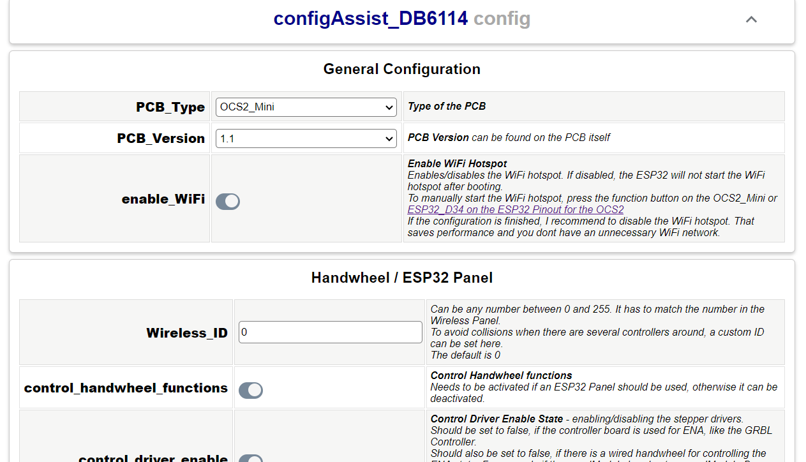

OPEN-CNC-Shield 2 ESP32 Firmware Installer
Install the OCS2 firmware directly from your browser — no IDE or compiling needed.
Flash Firmware
Connect the ESP32 to your computer via USB and click the button below. Select the serial port of your ESP32 and install the firmware.
Configure WiFi
After flashing, a WiFi setup dialog will appear automatically in your browser. Enter your WiFi network name (SSID) and password. The ESP32 will connect to your home network.
Configure Settings
After WiFi setup, you will see a link to the configuration page. Click it to open the OCS2 web interface where you can configure all settings (PCB type, autosquare, handwheel, etc.).
After changing settings, click "Reboot" in the web interface to apply them.

If the automatic WiFi dialog does not appear (e.g., older firmware or unsupported browser), you can configure the ESP32 manually:
- After flashing, the ESP32 creates a WiFi hotspot called "OCS2-XXXXX"
- Connect your computer or phone to this hotspot
- Open http://192.168.4.1 in your browser
- Configure WiFi and all other settings in the web interface
- Click "Reboot" to apply
- ESP32 is not detected by the browser
- Install the USB driver for your ESP32 (CP2102 or CH340). Make sure you use a data-capable USB cable (not charge-only).
- WiFi dialog does not appear after flashing
- Wait up to 15 seconds for the ESP32 to boot. If it still does not appear, use the manual hotspot method described above.
- "Connect" button is not visible
- Your browser does not support WebSerial. Please use Google Chrome or Microsoft Edge on a desktop computer.
- ESP32 does not connect to WiFi
- Check that the SSID and password are correct. The ESP32 supports 2.4 GHz WiFi networks only (not 5 GHz).
Installiere die OCS2-Firmware direkt aus dem Browser — keine IDE oder Kompilierung nötig.
Firmware flashen
Verbinde den ESP32 per USB mit deinem Computer und klicke auf den Button unten. Wähle den seriellen Port des ESP32 und installiere die Firmware.
WiFi einrichten
Nach dem Flashen erscheint automatisch ein WiFi-Dialog im Browser. Gib den Namen deines WiFi-Netzwerks (SSID) und das Passwort ein. Der ESP32 verbindet sich mit deinem Heimnetzwerk.
Einstellungen konfigurieren
Nach der WiFi-Einrichtung erscheint ein Link zur Konfigurationsseite. Klicke darauf, um das OCS2-Webinterface zu öffnen. Dort kannst du alle Einstellungen konfigurieren (PCB-Typ, Autosquare, Handrad, etc.).
Nach dem Ändern der Einstellungen klicke auf "Reboot" im Webinterface, um sie zu übernehmen.
Falls der automatische WiFi-Dialog nicht erscheint (z.B. ältere Firmware oder nicht unterstützter Browser), kannst du den ESP32 manuell konfigurieren:
- Nach dem Flashen erstellt der ESP32 einen WiFi-Hotspot namens "OCS2-XXXXX"
- Verbinde deinen Computer oder dein Handy mit diesem Hotspot
- Öffne http://192.168.4.1 im Browser
- Konfiguriere WiFi und alle anderen Einstellungen im Webinterface
- Klicke auf "Reboot" zum Übernehmen
- ESP32 wird vom Browser nicht erkannt
- Installiere den USB-Treiber für deinen ESP32 (CP2102 oder CH340). Stelle sicher, dass du ein datenfähiges USB-Kabel verwendest (kein reines Ladekabel).
- WiFi-Dialog erscheint nicht nach dem Flashen
- Warte bis zu 15 Sekunden, bis der ESP32 gebootet hat. Falls er trotzdem nicht erscheint, nutze die manuelle Hotspot-Methode oben.
- "Verbinden"-Button ist nicht sichtbar
- Dein Browser unterstützt kein WebSerial. Bitte verwende Google Chrome oder Microsoft Edge auf einem Desktop-Computer.
- ESP32 verbindet sich nicht mit dem WiFi
- Prüfe, ob SSID und Passwort korrekt sind. Der ESP32 unterstützt nur 2,4-GHz-WiFi-Netzwerke (kein 5 GHz).